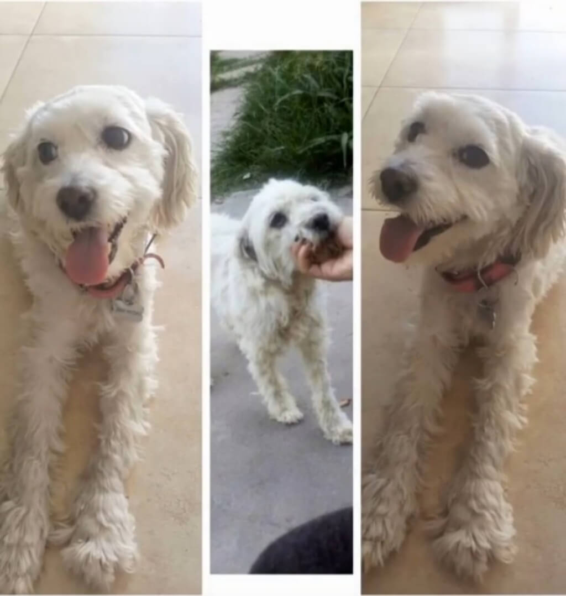
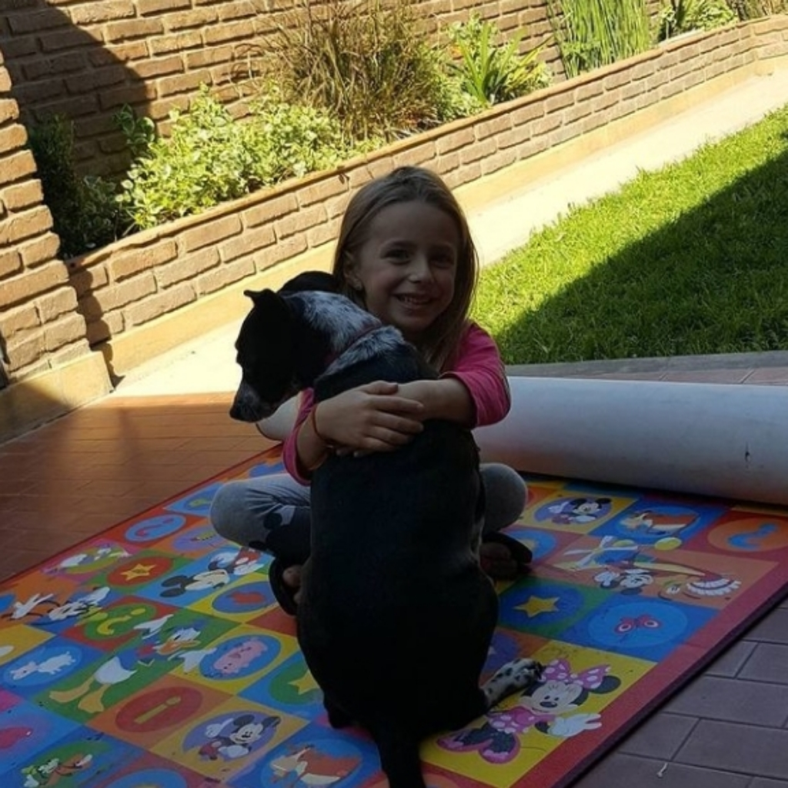
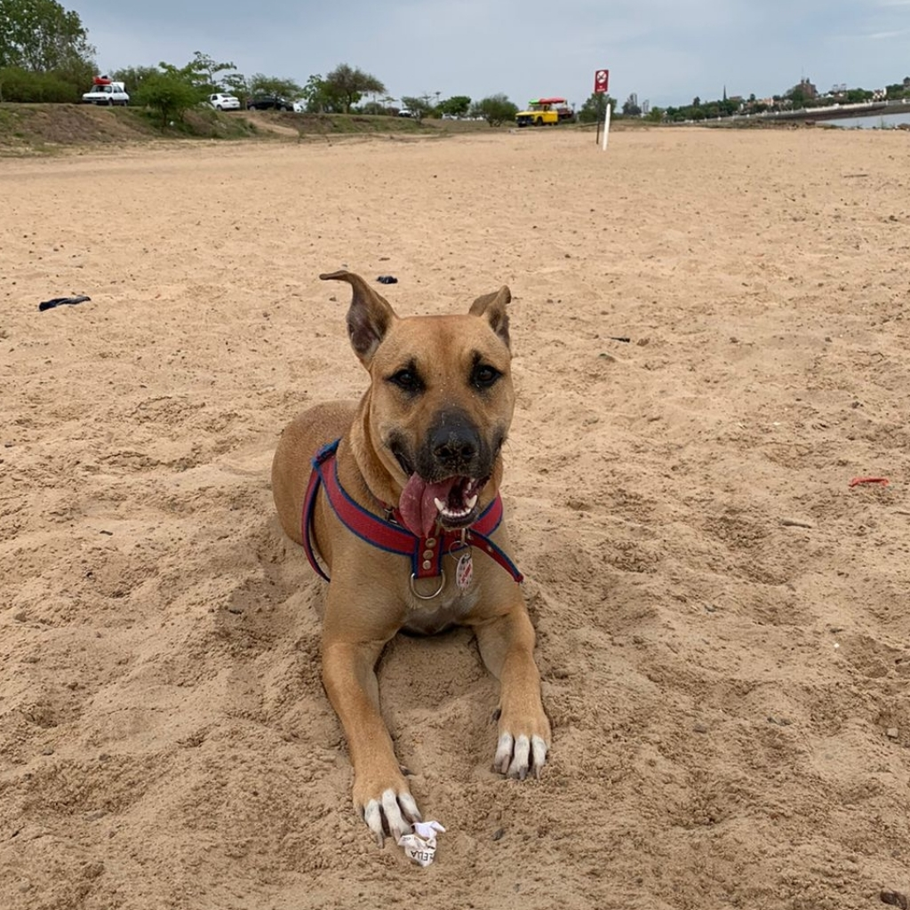
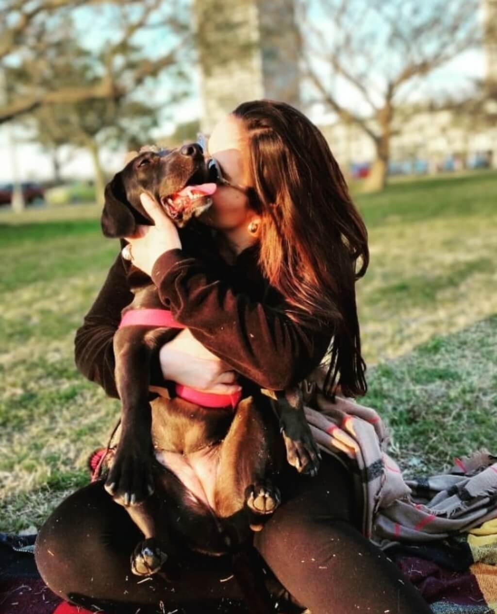
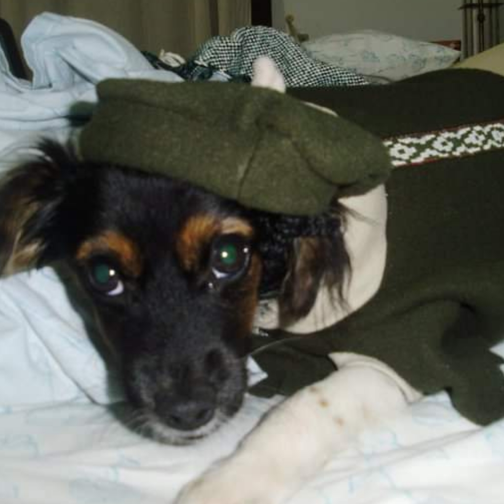
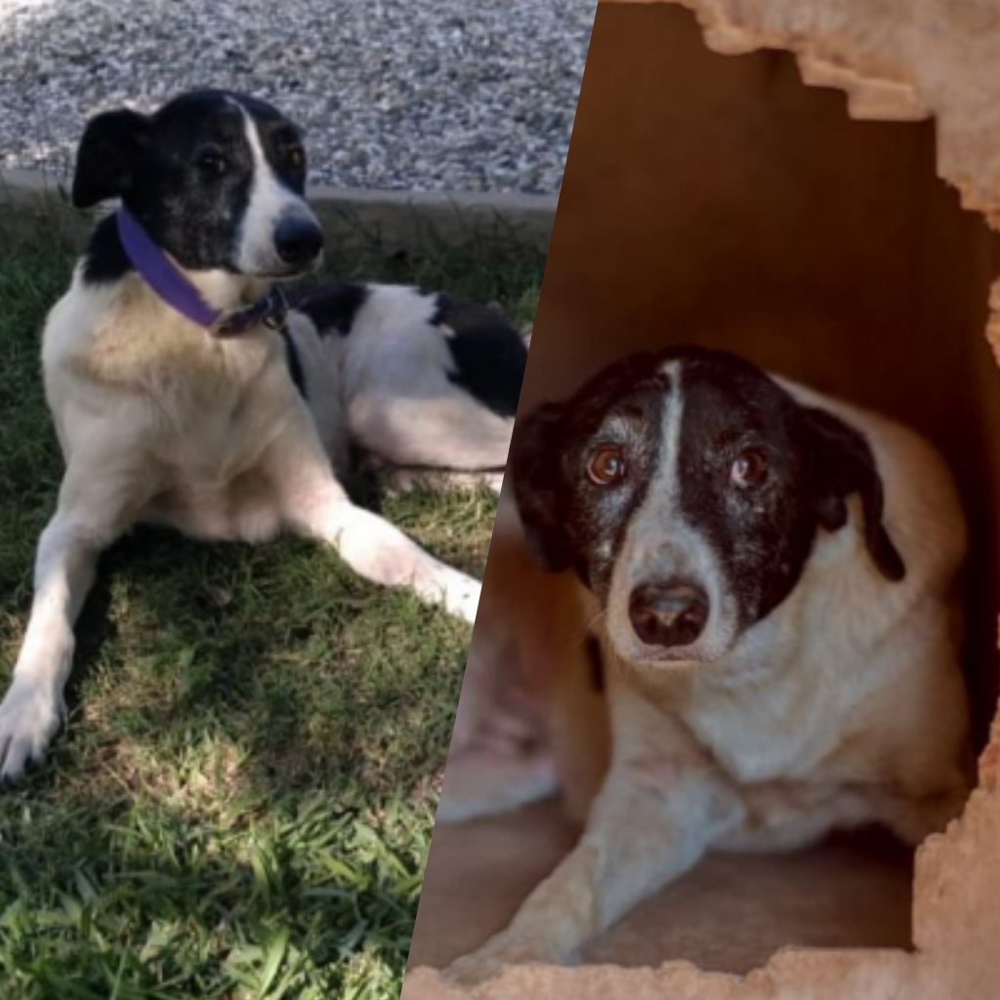

Ingresar / Crear usuario
Inicio
Nosotros
Quiero adoptar
Quiero transitar
Publicar
Enamórate de estas historias y conviértete en la próxima adopción feliz
Historias felices
¡Ellos ya se encontraron!
     